Content Outline
- Why a self-serve platform reduces duplication and delivery bottlenecks.
- How platform thinking applies to producer and consumer workflows.
- Which minimum services the platform should expose to domain teams.
- How platform architecture evolves as scale and needs increase.
- How platform capabilities align with governance and shared standards.
- How to improve team autonomy without losing interoperability and control.
S01 - Self-Serve Platform Design
Understanding how the MVP fits into a self-serve data platform.
Working with the modular plane architecture.
In the first part of this material, the organization learned all the basics of the data mesh. That included building a data mesh MVP for Messflix within a month in.
After Messflix starts to build data product after data product, a lot of duplication of efforts happens in terms of ingestion tooling and other data-related technologies. These data-related skills are specialized.
The purpose of a self-serve platform is to take the duplicated and specialized skills out of the many development teams and put them into one platform. Because the platform will be used by many teams, teams usually strive to make it self-serve, meaning.
focuses on exactly that: how to build a proper self-serve data platform and a handful of concepts that come in handy for doing it right the first time around. will do so by first recalling the minimal platform from.
In the first section, the organization will learn a definition of platform. Teams will also dive into platform thinking.
In the second section, the organization will learn about X as a service and apply this collaboration mode to make the data consumers’ work easier.
In the third section, the organization will learn about modular plane architectures in the context of platforms, as well as the architecture of a generic platform. Teams will apply that to make the data producers’ life easier.
will take another round of inspiration from the previously learned concepts and apply them to increase the value for the data producers by a lot.
To make life easier for the organization, shows the concepts the organization will learn as well as an overview of the three iterations of the self-serve platform.
The topic of federated computational governance, with an emphasis on computational (which the organization discovered in the preceding chapter), is of particular importance. highlights it again in each iteration.
S02 - Built and Consists
In, teams built an MVP for the data mesh. It consists of the following.
A simple scripted mechanism that allows for checking in a configuration JSON file containing a data product definition.
S03 - Governance Model
A wiki page explaining how to use this Git repository from both a data consumer and a data producer perspective.
In the MVP, teams deploy a registration script. This registration script validates the provided JSON and checks for simple governance policies.
The result of the computational check is then played back to the data product owner who registers the product so they have a chance to correct possible mistakes. This is a simple version of federated computational governance.
But what exactly is a platform in general, and why did this one emerge as the first solution?
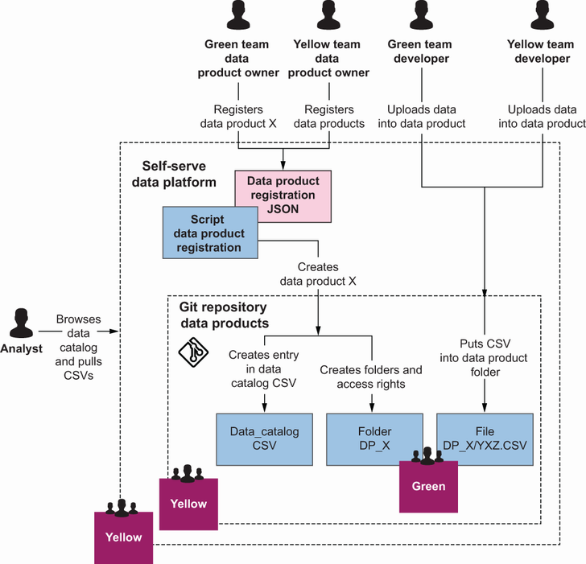
S04 - Self-Serve Platform Design
will use a generic definition of platform that unifies many current definitions. Economists tend to define platforms this way.
S05 - Self-Serve Platform Design
Which parties are mediated between?
How does each party interact with the platform? How does the “mediation” work?
answers these questions for the MVP platform.
S06 - Data Product Team Structure
If teams look at the platform MVP in the architecture diagrams, it is possible to observe quickly interactions. However, the platform already abstracts a few things away.
Which parties are interacting with the platform? Teams have data product owners and developer teams, which It is possible to group into data producers, albeit the two subgroups will have different requirements that It is recommended to consider separately.
Teams have analysts and other development teams as the data consumers. Again, teams have two very different kinds of consumers with different requirements.
Finally, teams have a lot of data products. Considering data products as a party is a big advantage.
So the second interest of data consumers is to communicate with the data producers. In the data mesh, teams aim to have that communication automatic because any personal communication does not scale into the mesh.
Communication through the data catalog is simple: data producers provide metadata, lots of it, and it’s well maintained. Data consumers read and consume the metadata.
Whether the organization want to consider data products as a platform feature as well is the choice. There is no right or wrong answer to this question, but It is recommended to at least have one answer that the organization bases the work on.
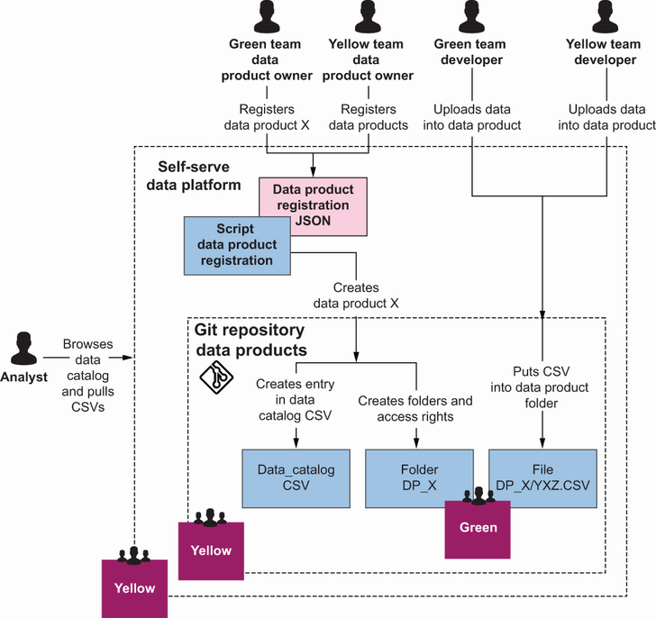
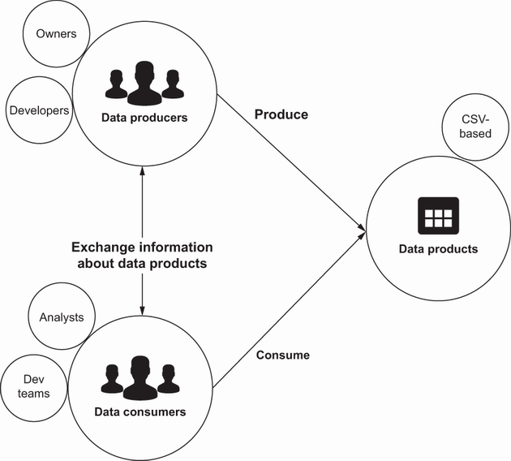
S07 - Self-Serve Platform Design
To understand the idea behind platform thinking, teams find it easier to use a nonsoftware example. Imagine a woodworking shop.
What usually happens in woodworking is that people start to make a few customized tools. That could be a simple dovetail guardrail; it could be a special chisel or a carving tool.
Now, the workshop owner could just buy a bunch of special-purpose tools. But to truly make this useful, he would need a huge inventory of them and a decent catalog to find the right tool.
Instead, he could provide something else: a special station for making special-purpose tools, including a few measurement instruments, a drawing board, possibly some metalworking instruments, and the like. Additionally, he could organize a short meetup on Wednesday evenings to let people showcase their special-purpose.
What the workshop owner would be utilizing as an alternative to stocking a lot of specialist tools is product thinking —providing people with the tools they need. In the second alternative, however, he is leveraging another idea called platform thinking.
The workshop owner is providing a platform: the special-purpose tool station that enables others via self-service to easily increase their output flow of high-quality furniture. He is utilizing the analysis of the flow of work, the sequence of steps the individual woodworkers are taking.
Platform thinking is not an alternative to product thinking. The approach considers it simply a second lens through which to view things.
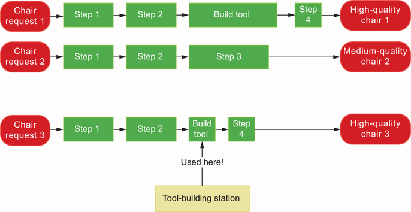
S08 - Self-service and Keep
Can be used in self-service, to keep the unit’s autonomy and ability to react to change.
In the woodworking example, this is exactly what teams have. Every woodworker can go on as desired.
S09 - Self-Serve Platform Design
The word platform makes some CIO/CTOs shiver because a lot of platforms do not support the idea of platform thinking. If the “platform” is a fancy deployment machine that requires every development team to have an expert who can use that fancy deployment machine.
The platforms that emerge out of platform thinking are lean and thin. These platforms are never launched as big and comprehensive pieces.
In fact, the larger the participant base becomes, the leaner the platform should become, in a sense. With more participants, the friction points grow, and it is necessary to avoid friction at all costs; otherwise, teams slow the flow, instead of enhancing it.
Next, applies platform thinking to the MVP platform.
S10 - Self-Serve Platform Design
Initially, Messflix has analysts and development teams. The development teams are data producers, while the analysts and possibly other teams in the example are data consumers.
The initial MVP platform focuses mostly on the data consumers in applying platform thinking. examines explore the workflows to understand why.
S11 - Self-Serve Platform Design
Finding the right dataset.
Possibly combining it with others.
The MVP platform allows a data analyst to combine almost all of these steps into one or two. Browsing and finding the right dataset as well as understanding it can all be done by reading the data catalog.
The MVP platform thus saves a substantial amount of time for data analysts each time they go through their Problem > Solution cycle.
For data producers, not much has changed. The data producer workflow usually involves capturing the data, then moving it to a storage location and exposing it to data producers.
The MVP platform produces a common set of tools for describing, storing, and exposing data, but doesn’t make it much easier than what the data producers did before in most cases.
Teams picked the analyst’s workflow because browsing and exploring datasets are also common tasks for development teams that want to use other teams’ data, for data scientists, and for ML engineers. As It is possible to see, though, the workflow for data consumers still takes a.
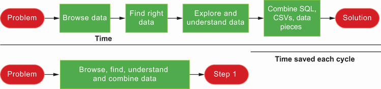
S12 - Metadata Management
Messflix decides to form a small team to take care of the platform for now. Two veteran data engineers start to maintain and develop the platform.
The data analysts responsible for reporting really enjoy the new data mesh and are excited about the new datasets that the Green and Yellow teams provide. Both teams keep on growing their number of datasets and products.
However, a couple of data scientists and machine learners who look at the data only from time to time to identify necessary datasets are having trouble with it. They are having a hard time digging through the CSV-based metadata catalog.
So people do what they usually do and call up the two engineers on the data team and ask them to help them dig through the catalog. If the platform is successful and has lots of data, the central team will end up doing.
But that leaves them with no time to work on the platform, and it won’t scale. So reviews X as a service to understand how platform teams can improve their communication with others.
S13 - Framework and Topologies
Team Topologies is a framework created by Matthew Skelton and Manuel Pais for modern technology organizations. Described in their material Team Topologies: Organizing Business and Technology Teams for Fast Flow (IT Revolution, 2019), this framework helps to design teams and their interactions in a.
As such, it is a great example of socio-technical architecture. In the framework, teams’re considering only three ways teams can interact, and one of them is X as a service.
will give the organization a better definition of this in a minute, but teams would like to return to the wood workshop example once more.
S14 - Station and Build
The tool-building station is becoming well adopted by a wide variety of woodworkers. But Bill, the owner of the workshop and the maintainer of the station, would like to drive up its adoption because he thinks it’s a great thing!
So the next day, he’s at the station and simply starts to talk to everyone who walks by. He’s giving a hand to people, helping them build a few new tools.
However, the next day he realizes that all these different kinds of woodworkers still aren’t able to build the tools themselves, so he changes his approach. On the second day, he’s merely assisting, teaching, and educating people about how to build tools and how.
Quite pleased with himself, Bill continues like this for a while. After a week, he starts to add a few things to the station.
The next day, Bob decides to use yet another strategy: he starts to redesign the complete station. This time, he tries to make it as self-explanatory as possible.
Sketch out the tool on the left side by using the paper and pencils beneath the station.
Use the saws and other tools located to the left to make the tool.
Try out the tool on the sample wood located to the right.
He also puts up labels and reorganizes things again.
The next week something incredible happens. Nothing.
S15 - Self-Serve Platform Design
As It is possible to see from this tool-building example, this collaboration model of X as a service fits quite well with a product like a platform. The other interaction modes in the Team Topologies framework are called collaboration and facilitation.
In their material, Skelton and Pais define X as a service as “consuming or providing something with minimal collaboration.” X as a service should be the default operation mode when a platform team interacts with other teams through their platform.
The idea behind a platform team is that it provides an internal product to the other teams that are producing value. The analysts who, for example, help the product people make important decisions are producing value, together with the product managers, and the development.
The key point is that many such value-producing teams exist. Almost all teams (or units) should produce value.
If each team runs its own CI system, that is totally fine for one dev team, for two dev teams, and maybe for three dev teams. But beyond a certain number, the costs of duplication simply are much larger than creating a team to.
But note that a platform team cannot operate well if it has any kind of friction. It has to provide the service without becoming a bottleneck.
In the previous example, It is recommended to see right away that human communication simply won’t scale and thus becomes a bottleneck. If the data engineers spend their days understanding lineage, they won’t have time to speed up the platform.
S16 - Self-Serve Platform Design
The difference between collaboration/facilitation and X as a service might be quite familiar to the organization. Teams have seen a lot of data organizations try to switch to an X as a service collaboration model lately.
These data organizations have data teams that are centralized and tasked with both ingesting data sources as well as modeling them out and providing reports and dashboards on top of them. Usually, the collaboration between report requesters and the central data team is one.
However, reporting and dashboarding simply don’t scale for some of these organizations. They then try to make the data team into a platform team with a bunch of analysts and analytics engineers spread out across the company.
The central data team becomes a “platform team” by focusing on just the data ingestion part and possibly on modeling a few key data pieces. On the other side, then, analysts and analytics engineers will pick up this data and produce reports and dashboards.
The interaction model here changes substantially. The central data team will have to do some serious product management by ingesting and providing datasets that are commonly used across the user base and align with the future direction of the company.
However, as the organization might’ve guessed, this collaboration mode, which is typical for a platform team, also requires a certain level of matureness, especially in terms of product management. So take this as a caveat when approaching the creation of the platform team.
Now it’s the turn to remove this communication bottleneck and turn the collaboration mode into X as a service for the company, Messflix.
S17 - Data Product Interfaces
To make the platform scalable, it is necessary to remove the people’s need for calling up the Data team. In the example, they are having problems in the discovery phase.
Teams’re still using the JSON files to offer backward compatibility to the data producers. But teams map the values of the JSON into the DataHub.
Keep the JSON files, and expand them to include additional values relevant to additional features in DataHub.
Scrap the JSONs, and allow data product owners to modify metadata via the API right inside DataHub.
The second option is more centralized than the first. The first option keeps the metadata close to the data product and “discovers it,” whereas the second option means more centralization.
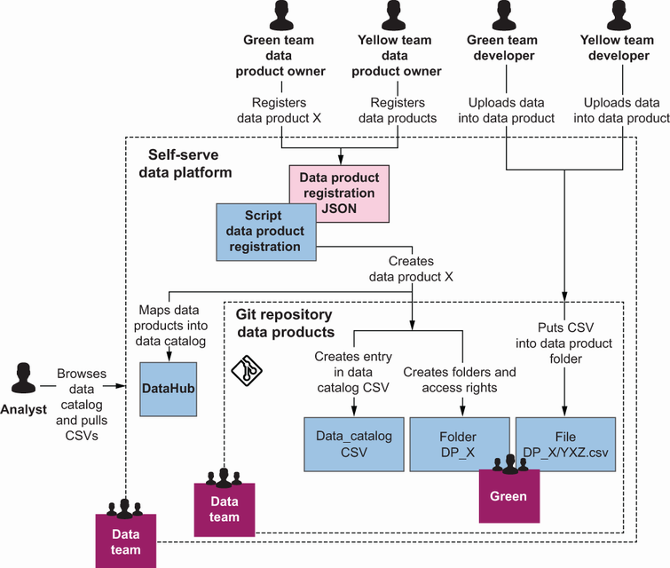
S18 - Governance Model
Data consumers at Messflix are having trouble understanding data products and are particularly worried about lineage. A centralist way of ensuring that lineage data exists is to simply enforce a policy checking for lineage information in the data product registration.
But for the governance team members at Messflix, that does not seem right at all. They come up with a better solution with the data platform team.
The data platform team, however, implements a simple script that does a bit of automatic lineage calculation based on SQL and Python code that uses other common interfaces and endpoints at Messflix. This way, teams Yellow and Green are encouraged to simply write good.
The new workflow for data consumers becomes pretty quick when using the advanced functionality of DataHub. It is advisable now be able to remove the human dependency on the Data team.
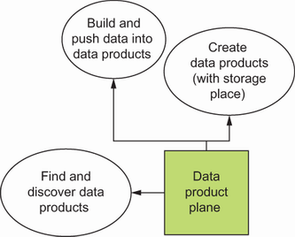
S19 - Data Product Team Structure
Teams Yellow and Green are quite happy with the current self-serve platform. But the ML engineers are requesting data from team Gray now, responsible for the Advertise capability.
The machine learners are already big fans of the DataHub data catalog, but team Gray isn’t at all a fan of pushing CSVs into some repository. They are big fans of PostgreSQL databases because their data product is huge and will contain many datasets.
The data platform team decides to make that possible. But how exactly?
S20 - Self-Serve Platform Design
Carliss Baldwin and C. Jason Woodard, in “The Architecture of Platforms: A Unified View” ( http://mng.bz/XaWp ), shine a different light on platforms that teams will explore.
But the architecture of any kind of platform is surprisingly constant. It is possible to find the same kind of architectural components inside developer platforms, self-serve data platforms, a brick-and-mortar marketplace, or even Stripe.
Take the central town square as an example. In many small towns, it hosts a farmers market, usually at a fixed time.
S21 - Self-Serve Platform Design
The buyers and the farmers are the complements, or participants, of the platform.
The town square (place) and the fixed time together become the platform interface, everything required for buyers and farmers to interact much more easily.
Everything on the town square and everything around it, possibly the processes around it such as charges for renting a space at the market, make up the platform kernel. This component includes everything that provides value, such as water taps and electricity for.
- Turns out, these three components complements, platform interface, and platform kernel—can be found in any platform. The latter two architectural components have the following goals.
The platform interface is supposed to be kept as fixed as possible to ensure maximal platform activity. Once the organization change the day of the market, things will go pretty crazy.
The platform kernel is constantly changed to optimize the platforms’ value to the participants. The pricing is optimized, possibly tents are provided, the power sources are upgraded to include other sellers, or maybe Christmas decorations can be provided to make the farmers market a.
S22 - Self-Serve Platform Design
If teams revisit the architecture sketch from the preceding section, It is possible to highlight the complements, the different parts that make up the interface, and the platform kernel with some effort. Teams’ve depicted them for the organization in.
Leaving out parts of the interface is troublesome because If the organization change a part, the organization will cause serious value deterioration to the platform. For instance, if teams decide to not use the Git repository anymore, teams Green and Yellow will have to redo a.
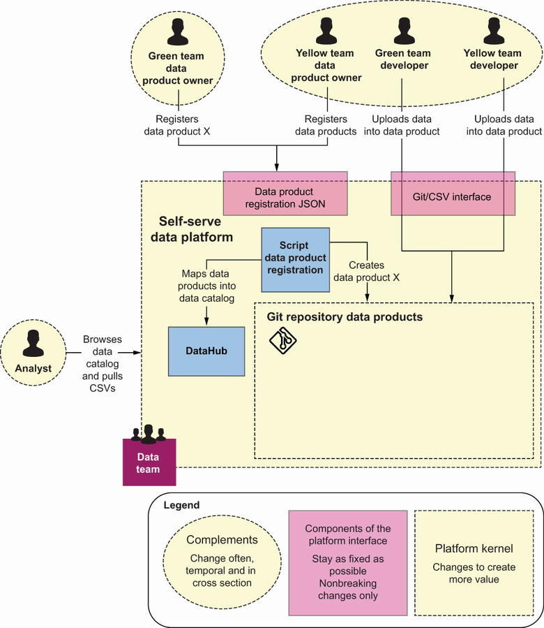
S23 - Data Product Interfaces
The word interface is an overloaded term. In terms of platforms, an interface to a platform X is something really generic; it’s “the ways of interacting with platform X.”.
From the platform perspective, an interface can be much more than a technically implemented REST interface. The central town square becomes a platform, with its interface being the location and the time.
And the same is true of a self-serve data platform. The interface might consist of practices and processes the organization’ve put into place to use, such as the central Git repository to upload CSVs.
All of these make up the interfaces, not just the technical parts. All of these are supposed to stay “mostly fixed.” That’s why they are so hard to spot and so important.
It is possible now easily point out the platform kernel —it’s everything hidden behind the interfaces. The actual software running the DataHub and the data product registration script are definitely parts of the platform kernel that It is possible to easily exchange in order to create more.
And that is exactly what teams are going to do. will keep the interface fixed, and add a new part to the interface by making the kernel more modular and exposing more parts of it.
S24 - Self-Serve Platform Design
Team Gray essentially wants to be able to configure the data storage. This is an advanced capability of the platform.
To deploy any kind of infrastructure, most technology teams today follow the infrastructure-as-code pattern. The infrastructure—like a Docker container, a cluster, some kind of load balancer, or a set of these together with operating systems and all—are configured as code.
To do so, teams use an abstraction layer, and tooling that maps that abstraction into reality. One of the most common tooling choices here is Terraform ( www.terraform.io ), together with its easy-to-read language, HashiCorp Configuration Language (HCL).
To provide an infrastructure template, the Gray team can write a Terraform file in HCL and make a couple of parameters configurable, like names, sizes, optional components, and so on. Any team can then use the template, fill in the parameters, and deploy the.
S25 - Data Product Team Structure
The data product plane for creating, finding, and discovering.
The data storage plane for the internal creation of the default CSV storage, or the option to create a Terraform template for using a suitable PostgreSQL instance that will autoregister the data products’ storage location.
A lot of other options could satisfy the same requirement. Instead of creating a Terraform template, teams could include an access policy and let data producers register the data storage location.
But this does the job just fine. Team Gray creates its Advertise data product, using the predefined Terraform template to create its PostgreSQL database, which automatically is checked into the DataHub.
The new changes the data platform team makes are important. First of all, the easy parts: a data product storage and port interface do the described Terraform magic.
However, this puts the infrastructure of the data ports largely into the hands of the data-producing teams. They are now free to exchange their PostgreSQL instance for a new one, should they have trouble with it.
The data product locator interface, depicted in, is used by the distributed data products to register and update themselves. They specify their location, which usually means the SQL endpoint for the PostgreSQL instance, as well as the location of the datasets, which in.
The data product Locator then also checks the data product files, which are still hosted in the central repository for the rest of the data products, and provides the unified information to the DataHub.
Additionally, the data product Locator exposes its API externally. The analysts can keep on working with DataHub, but the ML engineers could use the new interface to programmatically keep track of the location of the data products Team Gray provides.
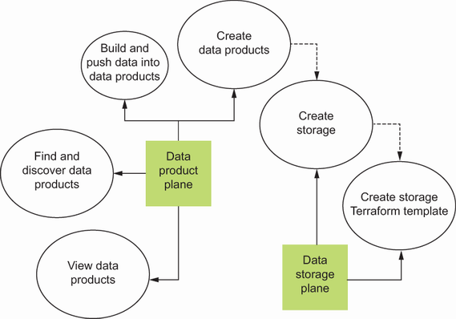
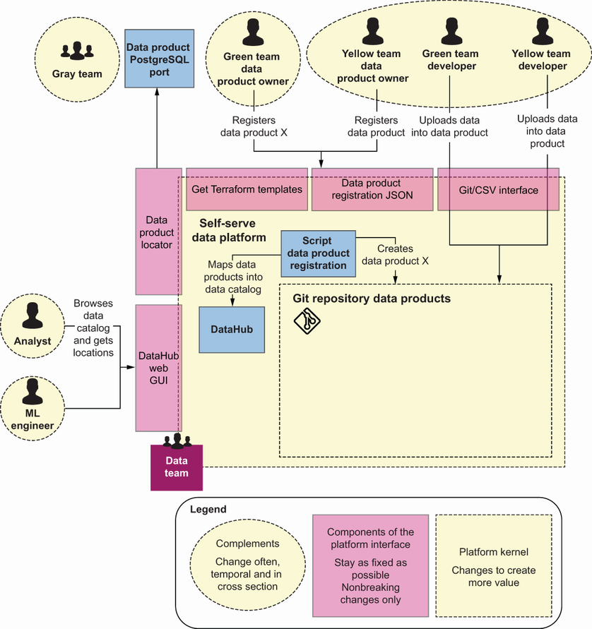
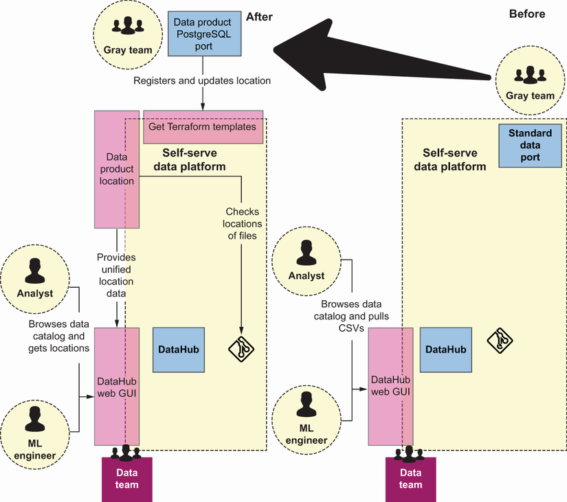
S26 - Governance Model
Now that the data can be stored outside the central Git repository, the federated aspect of governance becomes increasingly important. The Data team decides to provide some small additional capabilities inside its Terraform template.
Storage outside the central Git repository also rips open another topic: access policies. In a federated fashion, Messflix could simply decide to let the data producers handle everything on their own.
However, the team chooses to provide a little bit more help to data-producing teams. Right now, there are only two, so they choose to provide two default policies.
Finally, teams want to take another look at the data producers—this time, all of them. Now that the flow on the data consumer side isn’t the bottleneck anymore, the focus should be on enabling the data producers, as teams will see.
S27 - Self-Serve Platform Design
Messflix realizes that this ML suddenly takes off, together with its data mesh. The company has a recommendation system running, automatically optimized its ad campaigns, and has a bunch of forecasting systems in place.
The needed data products, however, are pretty intense in the sense that all three teams (Green, Yellow, and Gray) start to complain about the amount of transformation work they have to do. They feel like they don’t have the right tools to handle intense.
And they might be right. Data teams deploy data orchestrators, transformers, or parallel computing frameworks to handle these kinds of things.
The Data team members choose to provide Airflow as a self-service, meaning they would again provide a Terraform template together with an onboarding session. The beauty of the Terraform template is that they are able to include configurations that allow them to directly hook.
S28 - Self-Serve Platform Design
The data platform team members choose to provide an Airflow infrastructure template. They do so because all the currently relevant Messflix teams are well educated in DevOps.
The data platform team could have chosen to provide one hosted Airflow cluster maintained by the data platform team (or a third party like Amazon Web Services), with a reasonable separation between the compute environments per team.
Either option can be valid, depending on the circumstances. The question is simply, is the combination of platform team + flow-aligned teams able to increase their throughput with this option?
will now take a look at the final architecture of the self-serve data platform. Again, what the data platform team does is modularize and extend another part of the capabilities of the platform.
A data product plane for creating, finding, and discovering.
A data storage plane for the internal creation of the default CSV storage, or the option to create a Terraform template for using a suitable PostgreSQL instance that will autoregister the data products’ storage location.
A data transformation plane can be used optionally. In this case, it creates and links a Terraform template for Airflow.
This new architecture plane means a lot of new possibilities for the data-producing teams. zooms into a few relevant parts for the Gray team before turning to the complete picture.
The Gray team members utilize the Terraform templates to create the PostgreSQL instance for the data product storage and the SQL port. They also utilize the Airflow template to create ingestions and transformation tooling.
The final architecture, shown in, now allows for each data-producing team to have decently equipped data products.
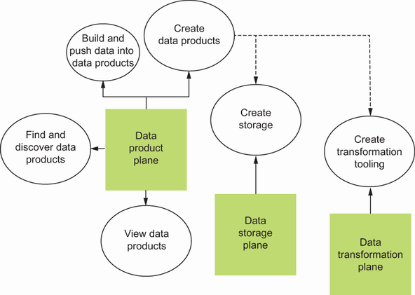
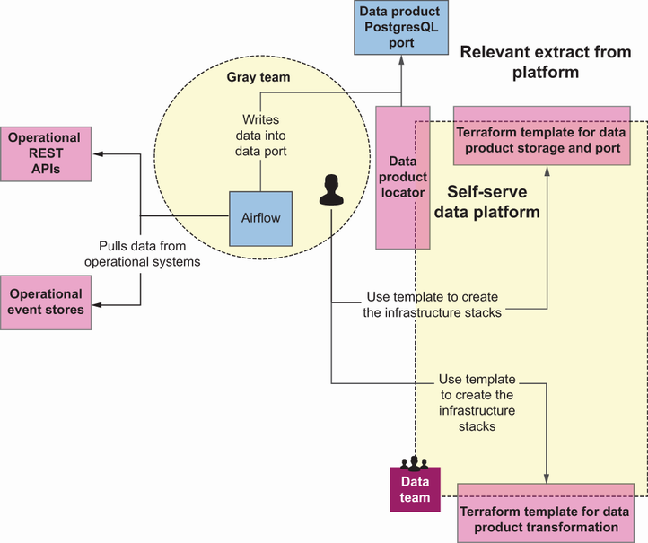
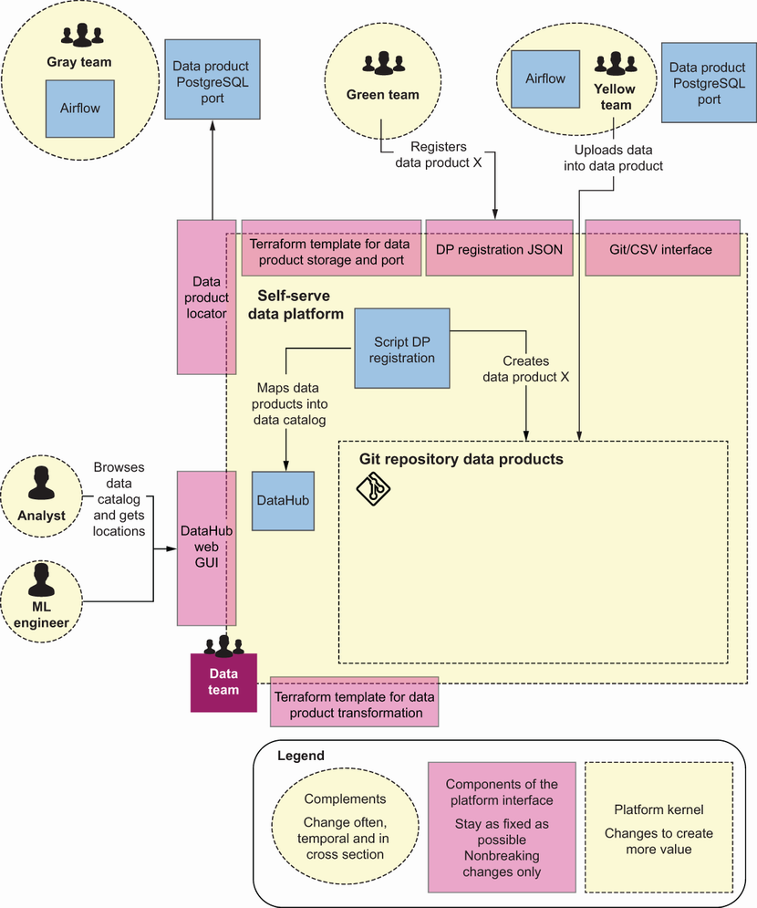
S29 - Data Product Interfaces
An optional CSV output port.
An Airflow instance to easily manipulate data to prepare it for consumption.
S30 - Data Product Interfaces
The data consumer stack consists of the DataHub and related tooling to mainly focus on finding and understanding the right data.
The workflow for data producers changes a lot with this newly provided interface. Both the Yellow and Gray teams decide to use the provided templates to start an Airflow instance inside their team context.
Team Gray is now using just the SQL ports.
Team Yellow opts to use the SQL endpoints in addition to the CSV port as output ports because the team is now free to create so many more valuable data products.
Team Green keeps on using the CSV dumps, as it doesn’t have the need for anything else right now.
The data consumers, both the ML engineers as well as analysts, use the central DataHub to locate datasets and then use their personal weapons to consume and combine them.
S31 - Governance Model
The Data team now realizes that the data products are becoming increasingly more decentralized. For this iteration, they decide to do two things in terms of computational governance.
Previously, the team members helped to calculate lineage based on the SQL script. With the provisioning of Airflow as a service, it makes sense for them to extend that calculation to the new way of modifying data.
S32 - Data Product Team Structure
In another iteration, the Data team could also enable the movement of the JSON files with data product metadata into an endpoint residing inside the data products, which are now also technically completely inside the teams’ contexts.
This would complete the architectural decoupling of the data products into one single unit called the architectural quantum. (Teams could argue this would also have been possible beforehand, depending on how the definition is ownership.).
But this decoupling would offer more freedom to the decentralized teams. In that setup, they could provide the endpoint any way they want, following a standardized schema, and simply register the URL of the endpoint at some central service.
And teams’re done! Except, teams’re never done.
Teams went through a long journey by first identifying the key concepts of the thin platform teams began with. Teams then went on to do three iterations on it until teams arrived at a platform for Messflix.
Teams’ve also covered a lot of ground with the self-serve data platform. shows a short summary of the stages.
S33 - Self-Serve Platform Design
Platforms are essentially mediating interactions between parties.
The architecture of a platform consists of complements, the platform kernel, and the interface.
X as a service is a great concept for understanding the interaction modes of platform teams that maintain self-serve data platforms.
Platform thinking is an approach to thinking about products in terms of development flow and speeding up development by providing shared tooling.
It is possible to build a self-serve data platform iteratively, starting with a small seed, or MVP. But concepts like X as a service also can help the organization quickly make the right decisions for the self-serve platform.
Combining tooling can create value with the data mesh, quickly leveraging the power of the self-serve platform.
S34 - Governance Model
6 Federated computational governance.
S35 - Google Cloud Self-Service Platform Architecture
A self-service data platform in a data mesh is designed to increase domain team autonomy while preserving shared governance and interoperability.
The architecture separates reusable platform capabilities from domain-owned data products. Domain teams consume standardized building blocks instead of requesting one-off implementations from a central team.
The model combines two capability families: composable platform solutions and common services. Composable solutions accelerate provisioning and delivery workflows; common services provide governance, trust, and operational consistency across domains.
- Platform solutions: reusable infrastructure and data patterns that teams can provision in self-service mode.
- Common services: metadata, policy enforcement, observability, and quality signals shared across data products.
- Consumption interfaces: stable access contracts that let consumers use products without coupling to producer internals.
- Template-driven delivery: vetted IaC templates improve security, repeatability, and speed of adoption.
This approach keeps platform ownership centralized for standards and guardrails, while execution remains decentralized in domain teams.
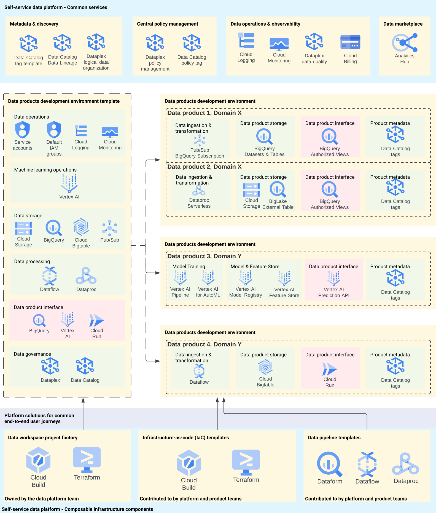
Key takeaways
- Why a self-serve platform reduces duplication and delivery bottlenecks.
- How platform thinking applies to producer and consumer workflows.
- Which minimum services the platform should expose to domain teams.
- How platform architecture evolves as scale and needs increase.
- How Google Cloud reference architecture separates reusable platform services from domain-owned data product execution.